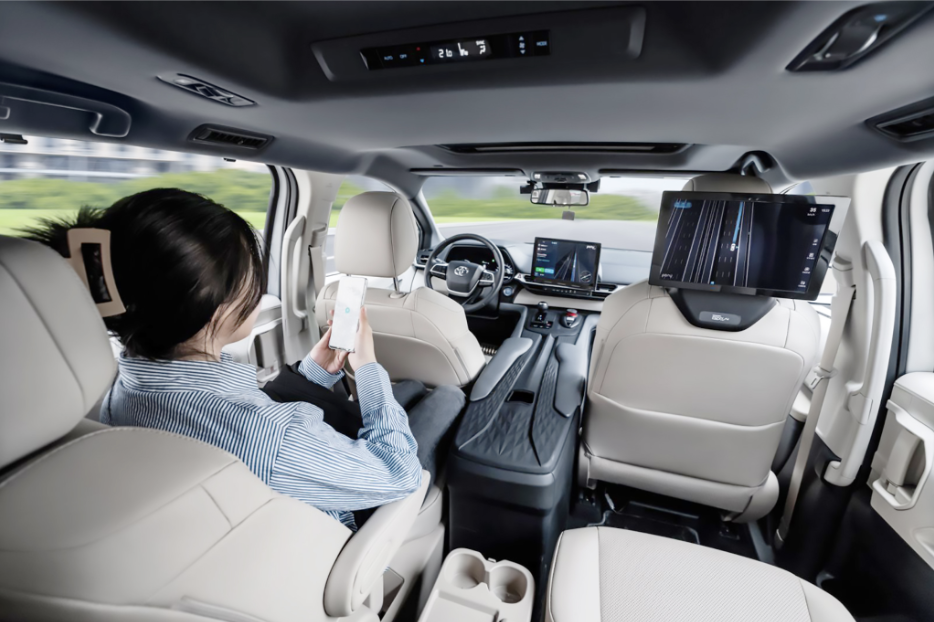

🎧 听录音 (Listen to the Audio)
大家好！欢迎(huān yíng) welcome各位收看我的播客。
前不久，我报名(bào míng) sign up参加体验(tǐ yàn) experience乘坐(chéng zuò) take (a ride)新加坡无人驾驶汽车，感觉真是太棒了，今天我就来和大家聊聊无人驾驶汽车。
这是全球(quán qiú) global首次(shǒu cì) first time向(xiàng) towards / to乘客(chéng kè) passenger开放的(kāi fàng de) open无人驾驶汽车，报名(bào míng) sign up参与体验(tǐ yàn) experience的人数(rén shù) number of people比一个月前增加(zēng jiā) increase了一倍(yī bèi) double，达到(dá dào) reach1000人左右。作为(zuò wéi) as本次(běn cì) this time测试(cè shì) test的乘客(chéng kè) passenger之一，一开始我很紧张(jǐn zhāng) nervous，看着方向盘(fāng xiàng pán) steering wheel自己转动(zhuǎn dòng) turn时，这种感觉太神奇(shén qí) magical了，就像(jiù xiàng) just like有个鬼(guǐ) ghost在开车一样(yī yàng) same / as！但很快我就适应(shì yìng) adapt了，车子开得很稳，一些我看不到的障碍物，车子能看到，让我觉得可以信任它。我想以后父亲老了，无人驾驶汽车可以代替(dài tì) replace我接送(jiē sòng) pick up and drop off父亲。
那么(nà me) then，无人驾驶汽车的发明(fā míng) invention，除了(chú le) besides能改变(gǎi biàn) change人们对城市(chéng shì) city环境(huán jìng) environment的体验，还有(hái yǒu) also have什么好处呢？首先(shǒu xiān) firstly，无人驾驶汽车有助于(yǒu zhù yú) contribute to缓解(huǎn jiě) relieve道路(dào lù) road拥堵(yōng dǔ) congestion的现象(xiàn xiàng) phenomenon，还能大幅度(dà fú dù) significantly降低(jiàng dī) reduce乘坐出租车的费用(fèi yòng) cost，而且(ér qiě) moreover价格(jià gé) price比坐公交车还便宜。
其次(qí cì) secondly，无人驾驶出租车可以通过(tōng guò) through软件(ruǎn jiàn) software根据乘客的需求(xū qiú) demand优化(yōu huà) optimize线路(xiàn lù) route。这样一来(zhè yàng yī lái) in this way，不但(bù dàn) not only能节约(jié yuē) save乘客的乘车(chéng chē) ride时间，也(yě) also能让更多的乘客一起乘坐，当然就省钱(shěng qián) save money啦！
总的来说(zǒng de lái shuō) generally speaking，无人驾驶汽车会给我们的生活带来很多方便，而且(ér qiě) moreover还会节省(jié shěng) save时间，也(yě) also更安全。你会去新加坡体验无人驾驶出租车吗？
欢迎(huān yíng) welcome大家留言和我分享(fēn xiǎng) share你对无人驾驶汽车的看法。
播放(bō fàng) play(53) 评论(píng lùn) comment(10) 分享(fēn xiǎng) share(30) 订阅(dìng yuè) subscribe(45)
Part A: You don't need to invent ideas! Just use the provided "sentence patterns" to logically combine the "Ideas" into one complete Chinese sentence based on the Context.
Part B: Create your own sentences using the given connectors and topics.
从文本一中找出与下列解释意思相符的词语填入括号中。
判断下面句子的正误（打 ✔）。无论正确还是错误，都请从文章中找出一个完整的句子来证明你的理由。（这是 0523 的经典考法，训练精准提取原文）
1. 参加这次体验的人数大约是一千人，和上个月一样多。
2. 作者刚开始坐在无人驾驶汽车里时，觉得非常放松。
3. 体验过后，作者觉得将来可以用无人驾驶汽车来帮忙照顾父亲。
4. 乘坐无人驾驶出租车需要花费的钱比乘坐公共汽车还要多。
5. 更多人一起乘坐无人驾驶出租车，对保护环境有好处。
根据博客内容，简要回答下列问题。答案必须基于文章内容。
1. 作者写这篇博客的目的是什么？
2. 当作者看到方向盘自己转动时，他心里是怎么想的？
3. 作者后来觉得可以“信任”无人驾驶汽车的两个原因是什么？
4. 无人驾驶出租车是通过什么方式来帮助乘客节约时间的？
5. 结合文章最后一段，作者总结了无人驾驶汽车的哪三个主要优点？

你最近在深圳体验了无人驾驶汽车。请给你的一位喜欢科技的朋友写一封电子邮件，分享你的体验。
字数：100-120 个汉字。满分为8分，其中内容占3分，语言占5分。
在电子邮件中，你必须：
：
你好！
(1) 回应第一个点（时间与地点）：
(2) 回应第二个点（描述感受）：
(3) 回应第三个点（解释好处）：
你下次有空吗？我们可以一起去体验！
祝好！